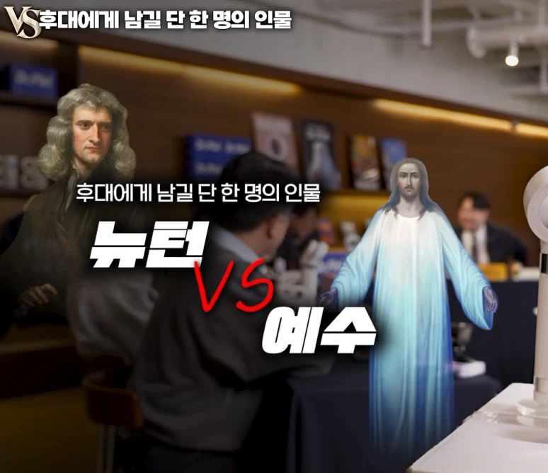
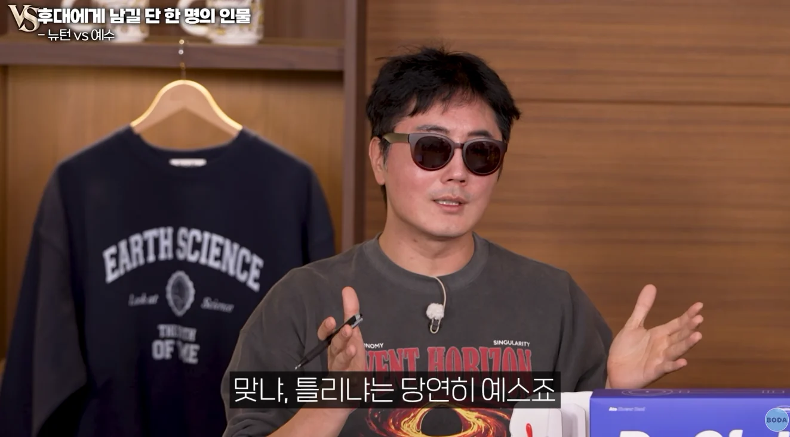

뉴턴이 나온다음에 지상과 천상을 통합되어 보게 됐다 안카요!
응 프린키피아 몇명이나 이해함?
아니 예수는 그쪽사람한테만 영향이 있잖아!!!
싸우는것도 다 영향을 미치고 있는거다

예수는 정당성에 대한 논란부터 발생함
예수때문에 인생을 건 사람들이 엄청 많다
그리 따지면 마오쩌둥 때문에 3000만이 죽었다
사실 예수때문에 더 죽었음요 ㅋㅋㅋ
그 이야기를 남겼다간
멸망후 새로 일어설 인류가 또 개지랄이 남
진정하세요. 뉴턴도 신학자였어요.
느그 뉴턴 우리팀이네?!?!
ㄴㄴ 뉴턴이 남으면 예수도 뒤따라온다는 것.
예수님 수학 못했죠?
학교를 안갔어 ㅎ
회식비를 건 과학, 역사 교수님들의 막장 토론임.
WWE 막장토론이니까 역사쪽 교수님들이 그쪽업계 광신도라고 생각하지 말것
댓글
수집 당시 댓글 234개
ㅇㅇ · 11.18 23:45:31
ㅇㅇ · 11.18 23:50:03
ㅇㅇ · 11.18 23:50:53
ㅇㅇ · 11.18 23:51:57
삭제됨 · 11.18 23:57:23
· ㅇㅇ · 11.18 23:59:59
Financial · 11.18 23:58:16
불망고 · 11.19 00:02:33
삭제됨 · 11.19 00:03:20
· ㅇㅇ · 11.19 00:08:27
· ㅇㅇ · 11.19 00:09:57
· ㅇㅇ · 11.19 00:10:57
· ㅇㅇ · 11.19 00:11:36
· ㅇㅇ · 11.19 00:13:34
· ㅇㅇ · 11.19 00:14:45
· ㅇㅇ · 11.19 00:14:47
· ㅇㅇ · 11.19 00:15:16
환란 전 교회 휴거 · 11.19 00:04:23
ㅇㅇ · 11.19 00:07:10
ㅇㅇ · 11.19 00:08:11
· ㅇㅇ · 11.19 00:10:31
· ㅇㅇ · 11.19 00:10:56
· ㅇㅇ · 11.19 00:12:16
· ㅇㅇ · 11.19 00:14:18
· ㅇㅇ · 11.19 00:15:11
· ㅇㅇ · 11.19 00:17:08
· ㅇㅇ · 11.19 00:17:17
· ㅇㅇ · 11.19 00:19:33
· ㅇㅇ · 11.19 00:21:50
· ㅇㅇ · 11.19 00:22:27
· ㅇㅇ · 11.19 00:43:02
· ㅇㅇ · 11.19 01:37:06
· ㅇㅇ · 11.19 02:34:01
· ㅇㅇ · 11.19 08:37:42
ㅇㅇ · 11.19 00:09:30
ㅇㅇ · 11.19 00:13:47
· ㅇㅇ · 11.19 00:30:31
· ㅇㅇ · 11.19 00:55:50
주소킹 · 11.19 00:15:59
야룽이 · 11.19 00:22:01
· ㅇㅇ · 11.19 00:24:26
· ㅇㅇ · 11.19 00:26:02
· ㅇㅇ · 11.19 07:39:05
· ㅇㅇ · 11.19 09:39:21
김머중 · 11.19 00:57:04
ㅇㅇ · 11.19 01:28:43
ㅇㅇ · 11.19 01:30:43
ㅇㅇ · 11.19 01:37:50
· ㅇㅇ · 11.19 01:38:22
· ㅇㅇ · 11.19 01:54:03
· ㅇㅇ · 11.19 02:06:35
· ㅇㅇ · 11.19 02:11:48
· ㅇㅇ · 11.19 02:12:03
· ㅇㅇ · 11.19 02:12:26
· ㅇㅇ · 11.19 02:13:25
· ㅇㅇ · 11.19 02:14:15
· ㅇㅇ · 11.19 02:21:42
· ㅇㅇ · 11.19 02:32:29
형아어디가 · 11.19 02:00:00
· 형아어디가 · 11.19 02:00:08
ㅇㅇ · 11.19 02:18:26
ㅇㅇ · 11.19 02:18:32
ㅇㅇ · 11.19 02:22:16
두꺼비볶음 · 11.19 02:47:50
ㅇㅇ · 11.19 03:18:38
· ㅇㅇ · 11.19 03:20:46
노은지 · 11.19 03:35:49
ㅁㄴㄴㅇ · 11.19 03:37:36
ㅇㅇ · 11.19 03:48:50
ㅇㅇ · 11.19 04:02:04
ㅇㅇ · 11.19 04:07:24
우주 · 11.19 04:44:17
· ㅇㅇ · 11.19 05:15:32
· 우주 · 11.19 05:32:56
· ㅇㅇ · 11.19 05:39:52
· 우주 · 11.19 05:48:16
· ㅇㅇ · 11.19 05:58:32
· 우주 · 11.19 06:16:51
· ㅇㅇ · 11.19 10:42:37
ㅇㅇ · 11.19 04:49:46
ㅇㅇ · 11.19 05:10:30
ㅇㅇ · 11.19 05:45:22
ㅇㅇ · 11.19 05:56:08
ㅇㅇ · 11.19 06:14:53
ㅇㅇ · 11.19 06:19:52
· 우주 · 11.19 06:34:29
ㅇㅇ · 11.19 07:25:05
· ㅇㅇ · 11.19 10:43:07
ㅇㅇ · 11.19 08:09:41
ㅇㅇ · 11.19 08:33:38
ㅇㅇ · 11.19 08:35:30
ㅇㅇ · 11.19 08:46:38
· 다큰낙타 · 11.19 09:55:12
ㅇㅇ · 11.19 09:18:29
ㅇㅇ · 11.19 09:46:33
ㅇㅇ · 11.19 11:34:30
ㅇㅇ · 11.19 11:36:29
ㅇㅇ · 11.19 11:36:51
ㅇㅇ · 11.19 12:03:15
ㄴㅁㄴㅁ · 11.19 12:08:35
ㅇㅇ · 11.18 22:59:05
클립보드 · 11.18 22:59:06
ㅇㅇ · 11.18 22:59:28
ㅇㅇ · 11.18 22:59:35
마유미 · 11.18 22:59:49
· 마유미 · 11.18 23:01:50
· ㅇㅇ · 11.18 23:07:40
· 마유미 · 11.18 23:13:23
· ㅇㅇ · 11.18 23:19:31
· ㅇㅇ · 11.18 23:22:28
· 마유미 · 11.18 23:25:29
· 마유미 · 11.18 23:25:33
· ㅇㅇ · 11.18 23:28:22
· ㅇㅇ · 11.19 00:03:31
· 마유미 · 11.19 00:07:28
파붕이 · 11.18 23:00:22
nigger892 · 11.18 23:01:03
· ㅇㅇ · 11.18 23:20:33
ㅇㅇ · 11.18 23:02:19
つついあやめのおっと · 11.18 23:03:15
· つついあやめのおっと · 11.18 23:07:14
· つついあやめのおっと · 11.18 23:08:21
· ㅇㅇ · 11.18 23:28:38
· つついあやめのおっと · 11.18 23:33:48
· ㅇㅇ · 11.18 23:34:52
ㅇㅇ · 11.18 23:03:20
ㅇㅇ · 11.18 23:03:29
ㅇㅇ · 11.18 23:04:02
ㅇㅇ · 11.18 23:04:09
· ㅇㅇ · 11.18 23:05:51
ㅇㅇ · 11.18 23:04:19
ㅇㅇ · 11.18 23:04:24
ㅇㅇ · 11.18 23:04:44
ㅇㅇ · 11.18 23:04:47
ㅇㅇ · 11.18 23:04:47
ㅇㅇ · 11.18 23:05:37
ㅇㅇ · 11.18 23:06:06
· ㅇㅇ · 11.18 23:44:22
· ㅇㅇ · 11.19 00:19:57
· ㅇㅇ · 11.19 00:37:23
해갤러 · 11.18 23:06:16
ㅇㅇ · 11.18 23:06:43
ㅇㅇ · 11.18 23:09:02
· ㅇㅇ · 11.19 01:28:54
ㅇㅇ · 11.18 23:09:28
ㅇㅇ · 11.18 23:10:12
ㅇㅇ · 11.18 23:10:56
ㅇㅇ · 11.18 23:11:12
ㅇㅇ · 11.18 23:12:53
ㅇㅇ · 11.18 23:12:58
· ㅇㅇ · 11.18 23:17:21
ㅇㅇ · 11.18 23:13:12
ㅇㅇ · 11.18 23:15:00
· ㅇㅇ · 11.18 23:17:14
· ㅇㅇ · 11.18 23:20:09
· ㅇㅇ · 11.18 23:21:34
· ㅇㅇ · 11.18 23:25:26
· ㅇㅇ · 11.18 23:26:42
ㅇㅇ · 11.18 23:15:08
ㅇㅇ · 11.18 23:15:36
oo · 11.18 23:16:40
cosmicday · 11.18 23:16:58
ㅇㅇ · 11.18 23:17:09
ㅇㅇ · 11.18 23:20:12
ㅇㅇ · 11.18 23:20:12
ㅇㅇ · 11.18 23:20:15
ㅇㅇ · 11.18 23:20:18
ㅇㅇ · 11.18 23:20:31
· ㅇㅇ · 11.18 23:23:57
· ㅇㅇ · 11.18 23:25:21
· ㅇㅇ · 11.18 23:27:31
· ㅇㅇ · 11.18 23:31:24
ㅇㅇ · 11.18 23:21:09
ㅇㅇ · 11.18 23:23:26
ㅇㅇ · 11.18 23:23:31
· ㅇㅇ · 11.19 04:32:33
삭제됨 · 11.18 23:25:15
· 아님말고 · 11.18 23:44:09
· ㅇㅇ · 11.18 23:46:01
ㅇㅇ · 11.18 23:27:27
ㅇㅇ · 11.18 23:28:03
· ㅇㅇ · 11.18 23:30:07
· ㅇㅇ · 11.18 23:32:19
ㅇㅇ · 11.18 23:29:41
ㅇㅇ · 11.18 23:32:06
· ㅇㅇ · 11.18 23:33:46
ㅇㅇ · 11.18 23:37:57
ㅇㅇ · 11.18 23:40:52
· ㅇㅇ · 11.18 23:41:55
· ㅇㅇ · 11.19 00:04:58
· ㅇㅇ · 11.19 00:06:09
· ㅇㅇ · 11.19 00:07:33
· ㅇㅇ · 11.19 00:12:00
ㅇㅇ · 11.18 23:41:14
· ㅇㅇ · 11.19 00:41:07
ㅇㅇ · 11.18 23:42:11
ㅇㅇ · 11.18 23:43:44
ㅇㅇ · 11.18 23:45:23
· ㅇㅇ · 11.18 23:48:40
· ㅇㅇ · 11.19 08:08:50
ㅇㅇ · 11.17 20:36:14
· ㅇㅇ · 11.18 23:22:45
ㅇㅇ · 11.17 20:36:49
· ㅇㅇ · 11.17 20:37:16
· ㅇㅇ · 11.17 20:37:51
ㅇㅇ · 11.17 20:37:40
· ㅇㅇ · 11.17 20:39:12
· ㅇㅇ · 11.17 20:39:56
· ㅇㅇ · 11.17 20:49:59
· ㅇㅇ · 11.18 23:22:55
ㅇㅇ · 11.17 20:39:43
· ㅇㅇ · 11.17 20:40:36
· ㅇㅇ · 11.17 20:42:48
· ㅇㅇ · 11.17 20:54:26
· ㅇㅇ · 11.18 23:07:58
· ㅇㅇ · 11.18 23:18:44
ㅇㅇ · 11.17 20:39:58
ㅇㅇ · 11.17 20:43:31
ㅇㅇ · 11.17 20:45:42
봇치쟝 · 11.18 22:55:51
rxde · 11.18 22:56:10
ㅇㅇ · 11.18 22:56:57
· ㅇㅇ · 11.18 22:57:14
· ㅇㅇ · 11.18 22:57:38
ㅇㅇ · 11.18 22:57:43
ㅇㅇ · 11.18 22:57:54
ㅇㅇ · 11.18 22:58:00
· ㅇㅇ · 11.18 22:58:15
· ㅇㅇ · 11.18 23:01:26
· ㅇㅇ · 11.18 23:12:02
· ㅇㅇ · 11.18 23:59:38
ㅇㅇ · 11.18 22:58:50
· ㅇㅇ · 11.18 23:05:52
· ㅇㅇ · 11.18 23:20:37